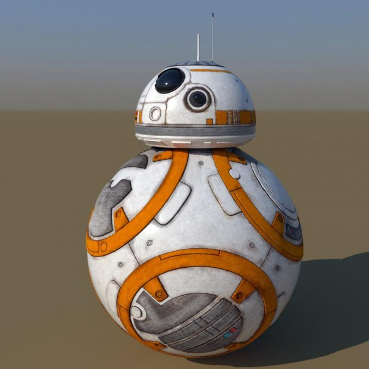

Star Wars
Star Wars is an American epic space opera franchise centered on a film series created by George Lucas. The opening crawl is the signature device featured in every film of the series. It opens with the static blue text, "A long time ago in a galaxy far, far away....", followed by the Star Wars logo and the crawl text, which describes the backstory and context of the film. The visuals are accompanied by the "Main Title Theme", composed and conducted by John Williams.
The sequence has been featured in every live-action Star Wars film produced by Lucasfilm. Although it retains the basic elements, it has significantly evolved throughout the series. It is one of the most immediately recognizable elements of the franchise and has been frequently parodied.
According to Dennis Muren, who worked on the six films, crawls on the original trilogy films were accomplished by filming physical models laid out on the floor. The models were approximately 60 cm (2') wide and 1.80 m (6') long. The crawl effect was accomplished by the camera moving longitudinally along the model. It was difficult and time-consuming to achieve a smooth scrolling effect. Furthermore, different versions in other languages (such as German, French and Spanish) were produced by Industrial Light & Magic.
 comment_1